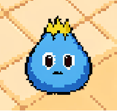
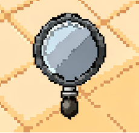
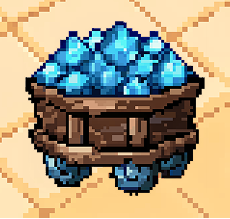
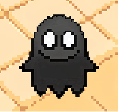
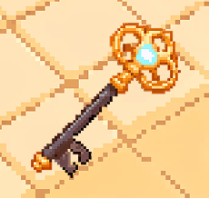
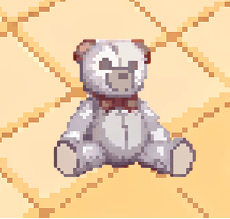

Здесь пахнет сырым кафелем и одиночеством. Это сон Исаака. Найди Ключ Света в бесконечных пустых комнатах, пока Тень не закрыла дверь навсегда.
Я снова там, где пахнет сырым кафелем и старой водой. Стены этого бассейна уходят в пустоту. Я звал маму, но ответом было лишь искаженное эхо моих собственных шагов. Выход заперт. Сама архитектура этого места меняется, стоит мне отвернуться. Мне нужно срочно проснуться.
Она преследует меня. Эта Тень соткана из моих самых жутких детских страхов, и она становится сильнее в темноте. Чтобы открыть дверь наружу, мне нужно найти осколки Ключа Света. Но пульс растет, а Тень шевелится прямо на границе моего зрения.
неизвестна
глубина
памяти

Здесь пахнет сырым кафелем.

Фрагмент сна поврежден. Продолжайте спуск, чтобы восстановить доступ.

Фрагмент сна поврежден. Продолжайте спуск, чтобы восстановить доступ.

Фрагмент сна поврежден. Продолжайте спуск, чтобы восстановить доступ.

Фрагмент сна поврежден. Продолжайте спуск, чтобы восстановить доступ.

Фрагмент сна поврежден. Продолжайте спуск, чтобы восстановить доступ.
Сброс невозможен. Единственный путь наверх лежит через Эпицентр. Соберите обе половины Ключа Света и откройте финальные врата, иначе ваше сознание останется в этой петле навсегда.
Бежать. Не пытайтесь вступить в контакт.
Артефакты восстанавливают вашу память и открывают новые уровни.
Система пустит вас глубже только в том случае, если артефакт текущего сектора успешно найден и сохранен. Проверьте свой Архив. Вы не можете сбежать, оставив воспоминания здесь.